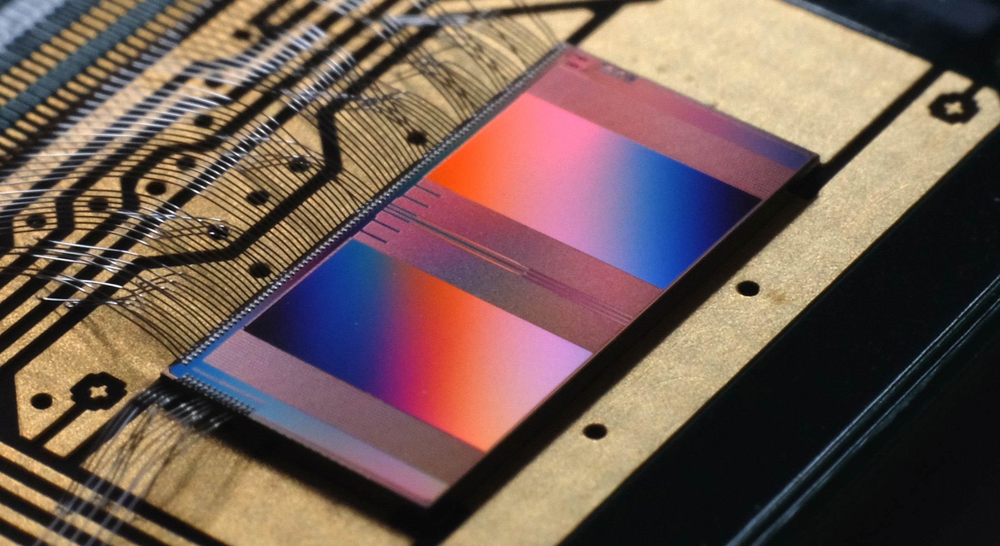

The BrainScaleS-2 system
Note
This chapter uses Billaudelle, S. (2022). From Transistors to Learning Systems: Circuits and Algorithms for Brain-inspired Computing (Doctoral dissertation, Heidelberg University). It provides an overview of the BrainScaleS-2 system required to successfully complete this lab course.
BrainScaleS-2 is a spiking, accelerated mixed-signal neuromorphic platform: It captures the dynamics of neurons and synapses in mostly analog integrated circuits and augments this physical emulation of the underlying differential equations by digital periphery. The analog circuits exploit the native scale of capacitances and conductances in microelectronic circuits to accelerate the neural dynamics by a factor of 1000. Typical time constants of multiple milliseconds are therefore rendered at the scale of microseconds [Wunderlich2019], [Schreiber2021]. The speed-up is relevant for applications in the fields of machine intelligence, brain modelling, and accelerated robotics, which BrainScaleS-2 aims to cover. The emulated dynamics are flexibly configurable to target vastly different neuron models and modes of operation. They support simple, non-time-continuous artificial neurons as well as biologically realistic dynamics in structured multi-compartmental cells.
{kind=link}

BrainScaleS-2 expands on the static emulation of the neural dynamics and provides the means for implementing on-chip plasticity rules and advanced learning experiments. For that purpose, it features custom embedded processor cores tailored for an efficient interaction with accelerated network dynamics. These on-chip controllers can be freely programmed to dynamically reconfigure all aspects of the on-chip circuits, facilitating the implementation of learning rules and closed-loop cybernetic experiments directly on the chip itself.
Overview
The BrainScaleS-2 ASIC is centered around an analog neuromorphic core housing the circuits emulating the neuronal and synaptic dynamics. This conglomerate of mostly analog full-custom circuits operates in continuous time, asynchronously to its periphery. These dynamics can be configured and tuned through local digital memory SRAM. The synapse matrices, basically representing large in-memory compute arrays, are a prime example of this architecture.
The ASIC is optimized for event-based communication and to that end provides an on-chip spike router. Spikes can be directly injected into the ASIC from the “outside”, e.g. a host computer or – in a multi-chip system – other ASICs or potentially event-based sensors. In these cases, the events are relayed by an external controller chip (i.e., an FPGA) acting as a real-time communication interface. Output spikes can be also recorded to host or injected into external actuators in robotics applications. In addition, background spike sources are directly provided on the ASIC itself [Schemmel2021]. They can be configured to emit regular or Poisson spike trains at a total bandwidth of 8 × 125 MEvent/s.
{kind=link}
The analog neuromorphic core
The analog core is segmented into multiple specialized subsystems for both the neuromorphic emulation itself and supporting circuitry. It is primarily composed of neurons and synapses circuits. The following paragraphs discuss these individual circuits and in that process roughly follow the path of an event from the synapse circuits to a neuron’s membrane.
Synapses
The synapse circuits take on one of the most central roles in the analog neuromorphic core [Friedmann2016]. They perform the actual in-memory computation, primarily define the network topology, and feature sensor circuits facilitating the on-chip implementation of (temporal) correlation-based, biology-inspired learning rules. The synaptic efficacy controls the conversion of events or spikes into analog current pulses using a 6 bit DAC in the following way: The magnitude of the synaptic current is scaled by the respective weight value, \(w\), which is locally stored in 6 bit of full-custom SRAM. Thus, the amplitude of the resulting current is the product of the synapse circuit’s current generated by a DAC, and a globally set bias current of 0 to 1 µA. The sign of a synapse, i.e. its either excitatory or inhibitory nature, is set as a shared property between a group of synapses.
Neurons
A BrainScaleS-2 ASIC houses 512 neuron circuits, distributed over two horizontal rows of 256 neurons each. These rows are also divided into two quadrants with 128 neurons each. The neurons implement the AdEx. model, but can be reduced to the LIF. model for the realization of SNNs. Their parameters can be also modified to realize ANNs. These dynamics are combined primarily with synaptic currents having exponentially decaying kernels. Multiple instances can be merged to form larger logical neurons to, i.e., bundle the synaptic resources of the individual units and thus trade the total number of neurons for an increased fan-in. This process also allows to connect compartments with finite and configurable conductances to form multi-compartment emulations of morphologically more realistic neurons as well as dendritic computations [Kaiser2022].
The neuron circuit and its backend can be digitally configured via a total of 64 bit of local SRAM. Additionally, the analog components can be tuned through 8 reference voltages and 16 current parameters per neuron. They allow to set the circuits up for a wide range of target dynamics and at the same time allow the equalization of production-induced variations (i.e. fixed-pattern noise) between individual instances. Each analog parameter can be freely programmed as a digital 10-bit value and converted to analog signals using DACs.
Analog I/O
BrainScaleS-2 allows to route many of these potentials across the ASIC and to apply them to one of two analog IO pads, making them available to external measurement equipment or reference potentials [Kiene2017]. Furthermore, different ADCs can digitize these signals directly on the chip itself; two of these ADCs are fast, used for single neuron investigation, while 1024 are slow, referred to as CADCs, and used for sampling in parallel across a group of neurons. These capabilities do not only facilitate lower level measurements and the commissioning of the neuromorphic circuits but are also crucial to more directly interact with the system and bridge the gap between the analog and digital domains to, e.g., implement advanced plasticity rules.
Parallel analog-to-digital conversion
The analog emulation of neural states evolves asynchronously and fully parallel. While quite apparent for the 512 neuronal membrane potentials, this high-degree of parallelism becomes even more precarious for reading out the analog correlation sensors located in each synapse circuit which is required to execute plasticity calculations in the PPU (see next paragraph), using the digitized correlation values. BrainScaleS-2, hence, features massively parallel CADCs to still be able to incorporate these states into plasticity calculations.
The two CADCs – one per vertical half of the ASIC – each feature 512 channels, two per column of synapses [Schreiber2021]. The CADCs digitizes the parallel channels at a resolution of 8 bit and a maximum sampling rate of 1.85 MSample/s per channel [Schreiber2021].
On-chip plasticity
A significant body of work goes beyond static neural networks and focus on different learning paradigms or closed-loop setups where a (simulated) actor interacts with an artificial environment. To facilitate this, BrainScaleS-2 augments the accelerated dynamics of the analog neuromorphic core with custom embedded processors, one per vertical half of the ASIC [Friedmann2016] [Friedmann2013]. The PPUs have full read and write access to all on-chip components and can thus read out and operate on, e.g., the neuronal firing rates and, in addition, dynamically reparameterize all of the ASICs subsystems.
The general purpose parts are accompanied by custom vector extensions [Friedmann2016] [Friedmann2013]. They are capable of calculating with 128 8-bit or 64 16-bit integers in parallel. They allow to efficiently perform calculations based on vectorized data acquired from the analog neuromorphic core by the column ADCs, e.g., for weight update calculations. Additionally, the vector units directly attach to the synapse arrays’ memory interfaces and can thus access the synaptic weights and address labels in a row-wise fashion to read current weight values and write the new weight values.
System integration and experiment flow
The BrainScaleS-2 ASIC relies on a stack of peripheral circuitry and software for its functionality and user interface. Hardware setups are available in different form factors, from laboratory setups to smaller and portable setups [Stradmann2022] as well as multi-chip systems [Thommes2022]. All of them, however, share a very similar overall architecture: The neuromorphic ASIC is supported by a set of PCBs providing necessary power supplies, analog references, and IO circuits.
For running experiments on the chip, the chip itself is interfaced in real time via an FPGA. The user code executed on the experiment host compiles programs which are interpreted and executed by a state machine on the FPGA. These programs support simple instructions to read from and write to memory locations on both the BrainScaleS-2 chip and its periphery, and provide dedicated commands for the injection of spike events.
This program flow and hardware abstraction is encapsulated by the BrainScaleS-2 software stack [Müller2020]. The software stack consists of multiple layers from communication protocols to high-level experiment descriptions. A hardware abstraction layer represents each of the system’s components and subsystems as a configuration container. However, users typically interface with BrainScaleS-2 using high-level modules written in Python, namely PyNN and Pytorch.
- Wunderlich2019
Wunderlich, T,, Kungl, A.F., Müller, E., Hartel, A., Stradmann, Y., Aamir. S.A., Grübl, A., Heimbrecht, A., Schreiber, K., Stöckel, D., Pehle, C., Billaudelle, S., Kiene, G., Mauch, C., Schemmel, J., Meier, K. and Petrovici, M.A. (2019) Demonstrating Advantages of Neuromorphic Computation: A Pilot Study. Front. Neurosci. 13:260. doi: 10.3389/fnins.2019.00260
- Schreiber2021(1,2,3)
Schreiber, K. (2021). Accelerated neuromorphic cybernetics (Doctoral dissertation).
- Schemmel2021
Schemmel, J., Billaudelle, S., Dauer, P., & Weis, J. (2021). Accelerated analog neuromorphic computing. In Analog Circuits for Machine Learning, Current/Voltage/Temperature Sensors, and High-speed Communication: Advances in Analog Circuit Design 2021 (pp. 83-102). Cham: Springer International Publishing.
- Friedmann2016(1,2,3)
Friedmann, S., Schemmel, J., Grübl, A., Hartel, A., Hock, M., & Meier, K. (2016). Demonstrating hybrid learning in a flexible neuromorphic hardware system. IEEE transactions on biomedical circuits and systems, 11(1), 128-142.
- Kaiser2022
Kaiser, J., Billaudelle, S., Müller, E., Tetzlaff, C., Schemmel, J., & Schmitt, S. (2022). Emulating dendritic computing paradigms on analog neuromorphic hardware. Neuroscience, 489, 290-300.
- Kiene2017
Kiene, G. (2017). Mixed-signal neuron and readout circuits for a neuromorphic system. Masterthesis, Universität Heidelberg.
- Friedmann2013(1,2)
Friedmann, S. (2013). A new approach to learning in neuromorphic hardware (Doctoral dissertation).
- Stradmann2022
Stradmann, Y., Billaudelle, S., Breitwieser, O., Ebert, F. L., Emmel, A., Husmann, D., Ilmberger, J., Müller, E., Spilger, P., Weis, J., & Schemmel, J. (2022). Demonstrating analog inference on the brainscales-2 mobile system. IEEE Open Journal of Circuits and Systems, 3, 252-262.
- Thommes2022
Thommes, T., Bordukat, S., Grübl, A., Karasenko, V., Müller, E., & Schemmel, J. (2022). Demonstrating brainscales-2 inter-chip pulse-communication using extoll. In Proceedings of the 2022 Annual Neuro-Inspired Computational Elements Conference (pp. 98-100).
- Müller2020
Müller, E., Mauch, C., Spilger, P., Breitwieser, O. J., Klähn, J., Stöckel, D., Wunderlich, T., & Schemmel, J. (2020). Extending brainscales OS for BrainScaleS-2. arXiv preprint arXiv:2003.13750.